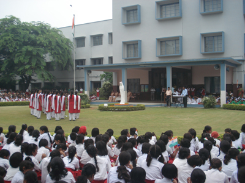
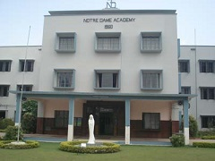

OUR PORTICO


OUR PORTICO’S - The Amphitheatre
PORTICO – An open stage, is the nerve centre of NOTRE DAME ACADEMY PATNA. All assemblies, special ceremonies, such as prize distributions, Fare well, Thanks giving assembly by the passing out batch of Class XII, Christmas celebration and other such events are held here.
Built in a circular style, it can seat around 3000 people and the circular stage can easily accomodate 20 to 60 children during a performance.